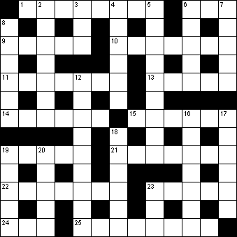

|
|
Daily Quick Crossword
25 January

|
Across 1 Disclosed (8)6 Favourite (3) 9 Bed covering (5) 10 Slaughter (7) 11 Enquire into (7) 13 Scrounge (5) 14 Avoided (6) 15 Liquid fuel (6) 19 Brown pigment (5) 21 Imitator (7) 22 Company operating flights (7) 23 Tick off (5) 24 Before (3) 25 Collected (8) |
Down 2 Green gem (7)3 Consume (3) 4 Servile follower (6) 5 Bargain-priced (4,5) 6 Tartan cloth (5) 7 Subject, topic (5) 8 Go up (6) 12 Repeating (9) 16 Lie back (7) 17 Missive (6) 18 Receive willingly (6) 19 Trap (5) 20 Money bag (5) 23 Snooker-player's stick (3) |
|
Copyright © 2018 Simply Daily Puzzles
|